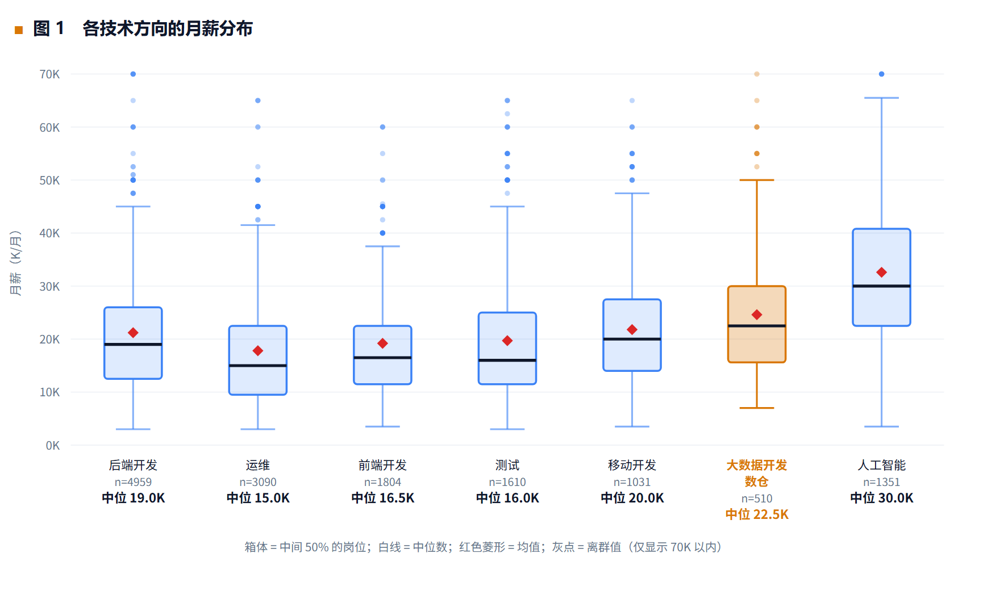
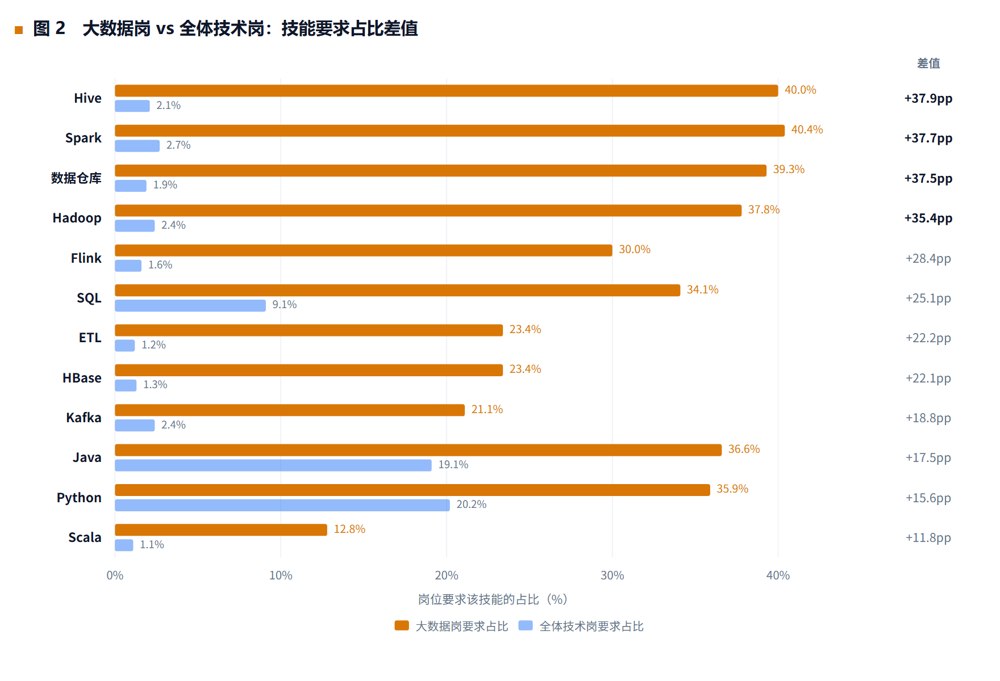
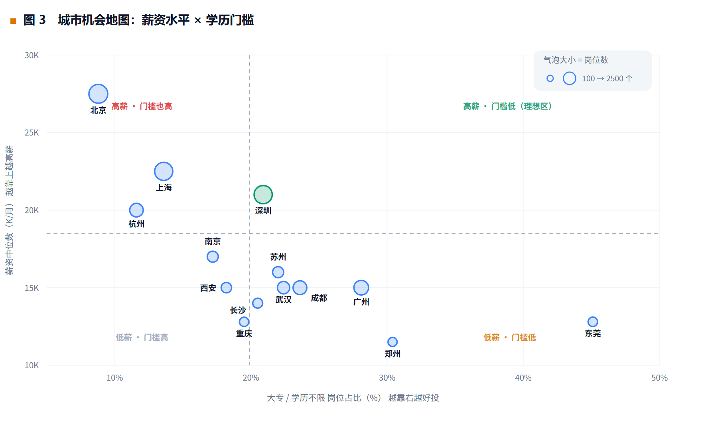
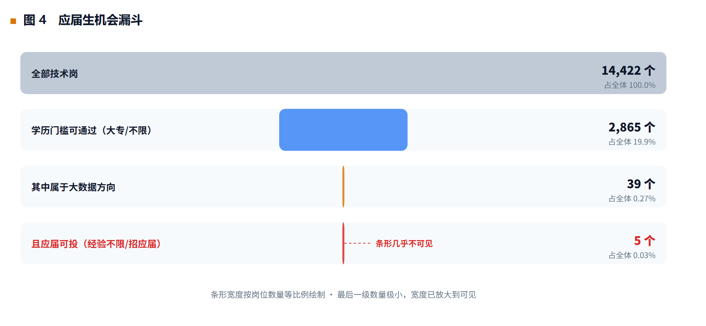

一句话：用 14,725 条招聘数据，回答一个具体问题——一名大数据技术专业的专科应届生，应当优先补齐哪些技能、投递哪些岗位方向、选择哪些城市。

数据规模 14,725 条 · 覆盖 70 类岗位 / 179 座城市 / 6,700 家企业 · 时间跨度 2022.08–2024.01
技术栈 Python · pandas · NumPy · 正则表达式 · matplotlib · 原生 SVG
目录
| 章节 | 内容 |
|---|---|
| 1 项目概述 | 背景、五个业务目标、技术链路、核心发现速览 |
| 2 数据源与采集方案 | 数据来源、字段构成、样本偏差的前置说明 |
| 3 数据预处理与清洗 | 8 步清洗、异常值语义化处理、去重验证、技能抽取 |
| 4 探索性数据分析 | 四层分析框架 + 4 张业务图表 |
| 5 业务结论与项目价值 | 4 条可执行结论、方法价值 |
| 6 项目总结、局限性、后续可优化方向 | 总结、8 项局限、4 个优化方向、复现说明 |
图表说明：报告中的 4 张图均为原生 SVG 手绘（index.html，离线可用、无 CDN 依赖）， PNG 版本由 headless 浏览器渲染导出，放在images/。
1 项目概述
本章交代项目为什么做、要做成什么、用什么方法做，以及最终得到了什么。如果只有一分钟，可以直接看 1.4 节的核心发现速览。
1.1 项目背景
大数据技术专业的学生在求职季普遍会遇到一个尴尬：课本上学的技术栈（Hadoop、Hive、Spark、Flink）到底哪些是企业真正在用的？学完这些能不能直接找到对口岗位？如果不能，应该先从哪里进入行业？
这类问题的答案通常来自三种渠道：学长学姐的个人经验、招聘网站上的零散岗位描述、以及培训机构的招生话术。前两者样本太小，后者立场不中立。而招聘信息本身恰恰是一份大样本、可量化、且由企业用真实薪资预算投票产生的需求数据——每一行岗位描述，都是企业在说"我愿意为具备这些能力的人付这个价钱"。
本项目因此把问题定义为：用招聘市场的公开数据，回答"一名大数据技术专业的专科应届生，应当优先补齐哪些技能、投递哪些岗位方向、选择哪些城市"。
这个问题的价值不在于"分析数据"，而在于它输出的是一条可执行的投递策略。项目结论直接改变了我的求职计划：原本准备毕业就投"大数据开发工程师"，现在改为先投数据运维、ETL、后端开发等技能相邻的岗位，积累 1–2 年真实数据项目经验后再转岗。这个转变不是凭感觉，而是第四章那个"只剩 5 个岗位"的漏斗算出来的。
1.2 业务目标
项目设定了五个可验证的业务目标，每一条都对应一个具体的决策场景：
| 编号 | 业务目标 | 对应决策 | 检验方式 |
|---|---|---|---|
| G1 | 测算大数据方向相对其他技术方向的薪资溢价 | 这个方向值不值得选 | 各岗位方向薪资中位数对比 |
| G2 | 找出大数据岗的"区分性技能要求" | 优先学什么、哪些是及格线 | 大数据岗命中率与全体技术岗之差 |
| G3 | 评估技能是否真的带来薪资回报 | 会不会白学 | 控制城市与工龄后的技能溢价 |
| G4 | 量化"薪资—学历门槛"的城市权衡 | 去哪座城市投递 | 城市二维对比（薪资 × 大专可投率） |
| G5 | 测算专科学历叠加应届身份后的真实机会量 | 第一份工作怎么进 | 三重条件叠加漏斗 |
五个目标构成一条完整的决策链：先确认方向有价值（G1），再确认要补什么能力（G2、G3），再确认去哪里投（G4），最后确认第一份工作怎么切入（G5）。
1.3 技术链路与工具
项目采用标准的数据分析链路，每个环节的产物都可追溯：
| 环节 | 主要工作 | 工具 |
|---|---|---|
| 数据获取 | 获取公开招聘数据集，核对字段与样本结构 | 和鲸社区数据集 |
| 数据清洗 | 文本去标签、薪资结构化、去重、缺失值分级、类型转换、衍生字段 | Python 3 / pandas / NumPy / re |
| 探索性分析 | 描述统计、分组统计、交叉表、分层控制、敏感性检验 | pandas |
| 可视化 | 4 张图表，覆盖方向、技能、城市、机会量四个维度 | matplotlib（同款原生 SVG 版本用于网页） |
| 结论输出 | 业务结论、投递清单、局限性说明 | 报告 + 作品集页面 |
整条链路的代码量约 1,100 行，分为清洗脚本、EDA 脚本、图表数据脚本三个独立模块，可复现。
1.4 核心发现速览
| 指标 | 数值 | 说明 |
|---|---|---|
| 原始数据 | 21,320 条 × 21 列 | 拉勾招聘公开职位信息 |
| 清洗后数据 | 14,725 条 × 59 列 | 删除重复与异常记录，新增 38 个衍生字段 |
| 覆盖范围 | 70 类岗位 / 179 座城市 / 6,700 家企业 | 时间跨度 2022.08–2024.01 |
| 全体技术岗薪资中位数 | 18.5 K/月 | 均值 21.3 K，分布右偏 |
| 大数据岗薪资中位数 | 22.5 K/月 | 高于后端开发（19.0 K）与运维（15.0 K） |
| 大数据岗要求 Spark 的比例 | 40.4% | 全体技术岗仅 2.7%，差值 +37.7 pp |
| 大数据岗要求本科学历的比例 | 88.2% | 全体技术岗为 74.0%，高 14.2 pp |
| 大专 + 大数据 + 应届可投 | 5 个岗位 | 占全部技术岗的 0.03% |
| 技能溢价（控制混淆变量后） | Spark 为 −2.5 K | 全样本口径 +6.5 K 的溢价主要来自方向而非技能 |
最反直觉的一条在最后一行："会 Spark"并不构成谈薪筹码。全样本看，要求 Spark 的岗位薪资高出 6.5 K（+35%）；但把城市等级和工龄固定住之后，这个差值反转为 −2.5 K。原因是高薪的那批岗位本身就是数据开发岗，而数据开发岗里 Spark 是标配而非稀缺项。这一点决定了结论二的表述方式——学 Spark 是为了进门，不是为了加价。
1.5 交付物
- 数据清洗脚本（8 步，含日志）与清洗后数据集（14,725 行 × 59 列）
- 探索性分析脚本（4 层 20 张分析表）
- 4 张业务图表及其数据源（精确到每个箱线统计量、每个气泡坐标）
- 本报告与配套的可视化作品集页面
2 数据源与采集方案
本章说明数据从哪里来、包含哪些字段，以及在正式分析之前必须先讲清楚的一个前提——这份数据是被采样过的。这个前提决定了全文所有占比结论的表述方式。
2.1 数据来源
本项目使用和鲸社区（Heywhale）公开的拉勾招聘数据集，原始文件为 CSV 格式，共 21,320 行、21 列，原始采集自拉勾网（lagou.com）公开职位列表页，发布时间覆盖 2022 年 8 月至 2024 年 1 月。
选择公开数据集而非自行爬取，是一个经过权衡的决定，理由有三：
- 合规性。招聘网站的用户协议通常禁止未经授权的自动化采集，且职位描述文本可能包含企业联系方式等非公开信息。个人项目使用公开数据集可以规避这一风险，同时便于他人复现。
- 可复现性。作品集项目的价值之一是可被检验。使用公开数据集意味着面试官可以下载同一份数据、跑同一套脚本、得到同一个结论。
- 伦理表述的准确性。使用公开数据，报告里就应当如实写"使用公开数据集"，而不能暗示"我爬取了 2 万条数据"。后者一旦被追问技术细节（反爬策略、IP 池、请求频率控制）就会露馅，反而扣分。
2.2 字段构成
原始 21 个字段可分为四组：
| 分组 | 字段 | 分析价值 |
|---|---|---|
| 标识类 | id、positionId、companyId、create_at | 去重键、关联键 |
| 岗位描述类 | positionName、category、bigcategory、positionType、jobNature | 岗位方向归类、全职/实习筛选 |
| 薪资与要求类 | salary、city、district、education、workYear | 核心分析变量 |
| 企业与文本类 | companyFullName、companySize、industryField、financeStage、positionDetail、positionAdvantage、createTime | 混杂变量控制、技能抽取来源 |
其中 salary 字段是字符串形式的区间（如"20k-35k"），positionDetail 是完整的职位描述富文本，这两个字段决定了后续清洗工作中最重的两块内容：薪资结构化与文本标签清洗后的技能抽取。
2.3 采集方案的一个关键前提：这份数据是被"采样"过的
在正式分析前，我先做了一次样本结构检查，结果直接改变了整份报告的所有占比表述方式。
发现：70 个岗位类别中，有 23 个（33%）的记录数超过 400 条，且集中在 440–450 一线；有 47 个（67%）超过 300 条。最大类别 C++ 有 450 条，最小类别"病毒分析"只有 2 条。而现实中 Java 的岗位量通常是 Perl 的几十倍，在这份数据里两者却几乎一样多。
结论：这份数据采用的是按类别封顶采样策略——每个类别最多采集约 450 条，热门类别被截断，冷门类别全量保留。
后果与应对：
- 凡涉及"某类岗位占市场的百分之几"的结论，一律不能成立。本报告中所有占比均表述为"样本内占比"，并在此处明确标注。
- 这个采样方式也有正面作用：它保证了小众方向（如大数据，582 条）拥有足够的样本量做内部比较，而这正是本项目需要的。
- 因此项目结论的适用范围被限定为"类别内部的技术要求与薪资结构"，而不是"市场需求规模排名"。这一条写进了第六章的局限性。
这一步是整个项目里最容易被忽略、也最容易被面试官挑出问题的地方，所以放在了方法的开头。
3 数据预处理与清洗
清洗决定了后面所有结论的可信度。本章按八个步骤记录每一步做了什么、为什么这么做，以及如何验证这一步做对了。
3.1 清洗总体情况
清洗分为 8 个步骤，每步的记录数变动都写入日志：
| 步骤 | 操作 | 记录数 | 变动 | 列数 |
|---|---|---|---|---|
| 1 | 读取原始 CSV | 21,320 | — | 21 |
| 2 | 剔除无用列 | 21,320 | 0 | 19 |
| 3 | HTML 标签清洗 | 21,320 | 0 | 19 |
| 4 | 薪资结构化与异常剔除 | 21,305 | −15 | 22 |
| 5 | 按 positionId 去重 | 14,725 | −6,580 | 22 |
| 6 | 全字段去重 | 14,725 | 0 | 22 |
| 7 | 剔除关键字段缺失 | 14,725 | 0 | 22 |
| 8 | 描述字段填充 | 14,725 | 0 | 22 |
| 9 | 类型转换与有序分类 | 14,725 | 0 | 25 |
| 10 | 衍生字段构造 | 14,725 | 0 | 59 |
最终得到 14,725 行 × 59 列的分析用数据。全文薪资分析基于其中有薪资记录的 14,422 条。
3.2 步骤一：文本标签清洗
原始数据中 99.6% 的职位描述（positionDetail）含 HTML 标签，主要是 <br />、 、<p> 等富文本残留。这些标签会直接污染后续的关键词匹配——例如技能词"SQL"若被 <span>SQL</span> 包裹，简单的字符串查找仍能命中，但换行符和实体字符会导致跨词匹配出错。
处理方式是统一用正则剥离标签并还原实体字符，同时把连续空白压缩为单个空格。positionAdvantage（福利标签）做同样处理。
这一步虽然记录数不变，但它决定了后续技能抽取的准确率，是整条链路里"不做就会全错"的一步。
3.3 步骤二：薪资结构化与异常的语义化处理
salary 字段是形如"20k-35k"、"15k-25k·13薪"的字符串。清洗时先用正则拆出上下限与薪资月数，再计算平均值作为后续分析口径。
关键在于异常值的处理方式。机械套用 IQR 或 3σ 规则会把大量真实的高薪岗位误删，因此本项目采用按业务含义分类的处理策略：
| 异常类型 | 判定规则 | 业务含义 | 处理 |
|---|---|---|---|
| 无法解析 | 正则不匹配 | 字段格式异常 | 剔除 |
| 上限小于下限 | max 小于 min | 明显录入错误 | 剔除 |
| 疑似年薪误填 | min ≥ 100 | 月薪不可能达 10 万以上，应为年薪 | 剔除 |
| 区间跨度过大 | max ÷ min 超过 8 倍 | 上下限可能单位不一致 | 保留但打标 |
| 低薪可疑岗 | avg 不足 3 K | 疑似虚假招聘或实习岗混杂 | 保留但打标 |
这套规则剔除了 15 条记录（占 0.07%），并为后续做敏感性检验留下了对比组——被"保留但打标"的记录在 D1 检验中会被加回去重新计算，用来验证结论是否稳健。
3.4 步骤三：去重——本数据最大的一个坑
按 positionId 去重时删除了 6,580 行，占原始数据的 30.9%。这个比例高得反常，必须验证删除是否正确，否则可能误删真实数据。
验证做了两步：
- 跨城市重复检验：3,568 个重复的 positionId 组中，同一 positionId 出现在不同城市的组数为 0。说明不是不同城市发布了同名岗位，而是同一岗位被重复采集。
- 组内薪资一致性检验：重复组内部各条的薪资100% 相同。
两条证据都指向同一个结论：这是同一岗位的多次抓取记录，而非真实的多条招聘需求。去重保留 createTime 最新的一条，删除操作合理。
如果不做这个验证，直接删掉 31% 的数据，会是一个经不起追问的操作。而如果不去重，重复岗位会让所有"岗位数量"类统计失真，尤其是城市岗位数排名。
3.5 步骤四：缺失值分级处理
缺失值按"是否影响核心结论"分三级处理，而不是一律填充或一律删除：
| 级别 | 字段 | 处理方式 | 理由 |
|---|---|---|---|
| 关键字段 | salary、city、education、workYear、positionName | 有缺失即剔除 | 缺失则无法参与任何分组分析 |
| 描述字段 | companySize、financeStage、industryField | 填充为"未知" | 仅作辅助维度，填充后可保留样本 |
| 文本字段 | positionDetail | 保留空值 | 技能抽取时按"未命中"处理 |
实际执行后，关键字段缺失的记录数为 0——说明该数据集在这些核心字段上完整性较好。182 条企业规模为"未知"的记录被保留，并在分析中单独成组（该组薪资中位数 33.2 K，明显偏高，很可能是大厂未标注规模，属于需要在解读时剔除的干扰项）。
3.6 步骤五：类型转换与有序分类
三个字段需要从字符串转为有序分类变量（pd.Categorical(ordered=True)），否则分组统计会按字符串字典序排列，导致"10年以上"排在"1-3年"前面这类错误：
- 学历：不限 → 大专 → 本科 → 硕士 → 博士
- 经验：在校/应届 → 1年以下 → 1-3年 → 3-5年 → 5-10年 → 10年以上 → 不限
- 公司规模：少于15人 → 15-50人 → 50-150人 → 150-500人 → 500-2000人 → 2000人以上
同时把 createTime 转为 datetime 类型，用于确认数据的时间跨度。
3.7 步骤六：衍生字段构造
这是把原始字段转化为分析变量的关键一步，共构造四类衍生字段：
（1）岗位方向归类
基于 positionName 与 category 做关键词映射，归为 8 个方向：后端开发、前端开发、移动开发、测试、运维、人工智能、大数据开发/数仓、数据挖掘/算法。同时用 is_bigdata 布尔字段标记大数据相关岗位（582 条）。
（2）城市等级划分
按一线（北上广深）、新一线（成都、杭州、武汉、南京、苏州、西安、长沙、重庆等）、二线、其他四档归类，用于后续控制城市这个混淆变量。
（3）技能标签抽取
这是技术上最需要小心的一步。技能词典包含 18 个技能（Hadoop、Hive、Spark、Flink、HBase、Kafka、Yarn、MapReduce、Zookeeper、ClickHouse、SQL、MySQL、Oracle、Redis、Java、Python、Scala、Shell、Linux、ETL、数据仓库）。
朴素做法是 if "SQL" in text，但这会把 MySQL 误判为 SQL——而 MySQL 的 12.6% 命中率里绝大部分会被错误计入 SQL。正确做法是对英文字符技能使用非字母边界正则：
def has_skill(text, skill):
if skill.isascii():
# 前后不能紧跟其他字母，避免 SQL 命中 MySQL、Hive 命中 archive
return re.search(r"(?<![A-Za-z])" + re.escape(skill) + r"(?![A-Za-z])", text, re.I) is not None
return skill in text # 中文技能词直接子串匹配这个细节直接影响了结论二的可信度：修正后 SQL 在大数据岗的命中率是 34.1%，全体技术岗 9.1%，差值 +25.0 pp；如果不做边界处理，SQL 会被高估到接近 MySQL 的水平，差值失真。
另外，技能列最终以 int8（0/1）而非布尔类型存储，原因是 CSV 回读后布尔列会变成字符串，导致后续 sum() 报类型错误。这是踩过坑之后的处理。
（4）薪资质量标记
在 3.3 中打上的 salary_flag 与 low_salary 标记保留在数据集中，供敏感性检验使用。
3.8 清洗质量校验：三项检验
清洗完成后做了三项检验，用来证明后续结论不是清洗过程的副产品：
| 检验 | 方法 | 结果 | 结论 |
|---|---|---|---|
| 异常值敏感性 | 剔除异常 vs 加回异常，两套口径对比 | 中位数完全一致（全体 18.5 K、大数据 22.5 K），均值仅变化 0.03 K | 结论不受异常值影响，且说明异常记录占比不足 1% |
| 城市排名稳定性 | 两套口径下重算 Top8 城市薪资 | 排名顺序完全一致 | 城市对比结论可靠 |
| 样本结构检验 | 统计各类别记录数分布 | 33% 类别记录数 ≥ 400 且集中在 440–450 | 已识别封顶采样偏差，限定结论适用范围 |
第一项检验是回答面试官"你删异常值会不会影响结果"的标准答法——做两套口径跑一遍，用数据回答，而不是口头保证"影响不大"。
4 探索性数据分析
分析分四层推进：先看样本长什么样，再做分组对比，然后用交叉分析排除混淆变量，最后检验结论的稳健性。四张图表分别对应四个必须做对的求职决策。
4.1 分析框架
分析分为四层，由浅入深，每一层都回答一个具体问题：
| 层次 | 内容 | 回答的问题 |
|---|---|---|
| A 层：样本概况 | 描述统计、分布结构 | 这份数据长什么样 |
| B 层：分组对比 | 方向、技能、城市、学历四个维度的分组统计 | 差异在哪里 |
| C 层：交叉分析 | 经验×学历、城市×学历、规模×薪资 | 差异是否由其他因素造成 |
| D 层：稳健性与偏差检验 | 敏感性检验、样本结构检验 | 结论能不能站得住 |
C 层和 D 层是整个分析的骨架。如果只做 A、B 两层，得到的是一堆好看的图表；加上 C 层才能排除混淆变量，加上 D 层才能知道结论的边界在哪。
4.2 样本概况
14,725 条技术岗记录，覆盖 179 座城市、6,700 家企业，薪资中位数 18.5 K/月、均值 21.3 K/月。
均值高于中位数 2.8 K，说明薪资分布右偏——少数高薪岗拉高了均值。这决定了全文所有分组比较一律使用中位数，不使用均值。分位数进一步说明了离散程度：P10 为 8.5 K，P90 为 37.5 K，相差 4.4 倍。技术岗的薪资离散度极大，只报平均值会掩盖这个事实。
样本结构上有三个特征值得注意：
- 城市高度集中：北京（17.7%）、深圳（15.9%）、上海（15.7%）、广州（7.9%）、杭州（5.9%）五城合计占 63.4%，其余 174 座城市瓜分剩余 36.6%。
- 学历门槛集中在本科：本科 74.0%，大专 16.9%，硕士 5.8%，学历不限 3.0%，博士 0.3%。
- 经验要求集中在 3–5 年：3–5 年占 39.7%，1–3 年占 24.2%，而面向在校/应届的仅 3.5%。
最后一条已经预示了后面漏斗图的结果：应届生真正能投的岗位本来就少，而大数据方向在这个本就很小的池子里占比更低。
4.3 图 1：各技术方向的月薪分布
图表类型：箱线图（含离群点与均值标记）
X 轴：岗位方向，按薪资中位数排序
Y 轴：月薪（K/月），上限截断至 70 K 以保证可读性
为什么用箱线图而不是柱状图：薪资是右偏分布，柱状图只能画均值，会被少数高薪岗拉偏。箱线图能同时呈现中位数、中间 50% 的区间（箱体）、整体跨度（须线）和离群值，信息密度更高，也更接近求职者的真实体感。
读图要点：
- 大数据开发/数仓的薪资中位数为 22.5 K，高于后端开发的 19.0 K 和运维的 15.0 K，但低于人工智能的 30.0 K。
- 箱体高度比中位数更值得看。大数据岗的中间 50% 集中在 15.6 K–30.0 K，箱体相对紧凑，说明这个方向的薪资更集中、更可预期；后端开发的箱体从 12.5 K 拉到 26.0 K，离散度更大，意味着同样的岗位在不同公司待遇差别悬殊。
- 人工智能方向中位数最高（30.0 K），但它不是专科生的现实选项——下一节和学历分析会说明原因。
面试追问预演：
问：为什么大数据比人工智能低，你还建议选大数据？ 答：因为选方向不是选薪资最高的，是选自己进得去的。人工智能岗 1,351 个，大数据岗 582 个，但人工智能岗对学历的要求几乎全部是本科以上；大数据岗里还有 5% 是大专可投。我要比较的不是"哪个方向天花板高"，而是"哪个方向我能真正拿到 offer"。
4.4 图 2：哪些技能是大数据岗的"专属门槛"

图表类型：横向分组条形图
X 轴：岗位要求该技能的占比（%）
Y 轴：技能名称，按"大数据岗命中率 − 全体技术岗命中率"的差值降序排列
为什么不用词云：词云只能看相对频率，看不出一个技能是不是大数据岗专属的。判断学习优先级，需要的是区分度而不是出现频次。所以这张图做了对照组：用大数据岗的命中率减去全体技术岗的命中率，差值（pp）才是真正的区分指标。
关键读数：
| 技能 | 大数据岗 | 全体技术岗 | 差值 |
|---|---|---|---|
| Hive | 40.0% | 2.1% | +37.9 pp |
| Spark | 40.4% | 2.7% | +37.7 pp |
| 数据仓库 | 39.3% | 1.9% | +37.5 pp |
| Hadoop | 37.8% | 2.4% | +35.4 pp |
| Flink | 30.0% | 1.6% | +28.4 pp |
| SQL | 34.1% | 9.1% | +25.0 pp |
| Linux | 15.8% | 15.9% | −0.1 pp |
前四名的差值都在 +35 pp 以上，它们是这条赛道的入场券——不具备基本进不了面试。
最有信息量的是最后一行：Linux 在大数据岗是 15.8%，在全体技术岗是 15.9%，差值几乎为零。这说明 Linux 不是加分项，是及格线。会 Linux 不会给你任何差异化优势，但不会会被直接筛掉——这类技能值得学，但不值得花大力气做项目包装。
技能组合比单个技能更重要。单技能的稀缺性有限，企业真正要的是组合能力：Hive + Spark 同时出现于 30.2% 的大数据岗，Hadoop + Spark 占 28.4%，Hadoop + Hive 占 25.3%，Flink + Spark 占 23.7%。这意味着学习路线应该按组合规划——目标是能跑通一条完整链路，而不是把技能一个个单独学完。
4.5 图 3：薪资与学历门槛的城市权衡

图表类型：气泡散点图
X 轴：大专/学历不限岗位占比（%）——代表学历门槛的宽松程度
Y 轴：薪资中位数（K/月）
气泡面积：该城市岗位数量（机会量）
过滤条件：仅保留样本量 ≥ 50 的城市
为什么要过滤样本量：不过滤的话，三亚、鸡西这类只有一两条记录的城市会因为个别高薪岗直接冲到薪资榜首（三亚 45 K、鸡西 30 K），得出完全错误的城市排名。这是城市分析里最常见的错误，也是这张图必须写明的处理。
读图要点：
图中右上角（高薪 + 低门槛）是理想区，但没有任何城市落在那里。现实是一条明显的负相关曲线——薪资越高的城市，学历门槛越严。
- 北京：薪资中位数 27.5 K 最高，但大专可投仅 8.8%，是全部城市中最低的。高薪是用学历门槛换来的。
- 广州 / 成都 / 武汉：薪资中位数都是 15.0 K，大专可投分别为 28.1%、23.6%、22.4%，是北京的 2.5–3 倍；大数据岗数量分别为 40、31、18 个。这是"门槛低、薪资居中、方向匹配"的区域。
- 东莞：大专可投高达 45.1%，但薪资只有 12.8 K，且大数据岗仅 1 个——门槛最低但方向不匹配，不适合作为起点。
- 杭州：薪资 20.0 K 而大专可投 11.6%，是典型的高薪高门槛城市。
城市等级视角进一步验证了这个梯度关系：
| 城市等级 | 岗位数 | 薪资中位数 | 大专可投占比 |
|---|---|---|---|
| 一线 | 8,231（57.1%） | 22.5 K | 16.1% |
| 新一线 | 4,577（31.7%） | 15.0 K | 21.4% |
| 二线 | 1,161（8.1%） | 12.5 K | 30.3% |
| 其他 | 453（3.1%） | 8.5 K | 44.8% |
薪资与门槛的梯度完全一致：城市等级每降一档，薪资中位数下降 5–7 K，大专可投占比上升 5–14 pp。
4.6 图 4：三重条件叠加后，还剩多少机会

图表类型：漏斗图
每一级：在前一级基础上再叠加一个条件后的剩余岗位数，条形宽度按数量等比例
口径说明："应届可投"取宽口径，即经验要求为"经验不限"或"在校/应届"。因为"经验不限"的岗位应届生同样可以投递，只算"在校/应届"会严重低估机会量。
读图要点：
| 筛选层级 | 剩余岗位数 | 占全部技术岗 |
|---|---|---|
| 全部技术岗 | 14,422 | 100% |
| 学历门槛可通过（大专/学历不限） | 2,865 | 19.9% |
| 其中属于大数据方向 | 39 | 0.27% |
| 且应届可投 | 5 | 0.03% |
三道筛子之后只剩 5 个岗位。如果换成严格口径（只算明确写"在校/应届/1 年以下"的），这个数字是 0。
这张图的正确解读方式：
它不说明大数据方向不该选，而是精确地说明了卡点在哪一道筛子上。看两级之间掉多少：
- 学历这一道筛掉了 80.1%——这是最大的门槛。
- 方向这一道从 2,865 掉到 39——说明在专科可投的岗位里，大数据方向只占 1.4%，机会密度低。
- 经验这一道从 39 掉到 5——说明大数据岗普遍要求 1 年以上经验。
一个关键的对照数据：如果把学历限制放开，只看"面向应届的大数据岗"（不限学历），有 94 个；而"专科可投的大数据岗"（不限经验）有 39 个。两个数字说明卡住的主要是学历，不是经验。
这直接指向了策略：既然行业入口是窄的，就从侧门进——先做技能栈相邻的岗位（后端开发 861 个专科可投岗、运维 884 个、测试 349 个），积累 1–2 年真实的数据处理经验，再转数据开发。这条路径比硬投校招大数据岗的成功率高得多。
面试追问预演：
问：只剩 5 个岗位，是不是说明这个分析没有实用价值？ 答：恰恰相反，"只剩 5 个"是整份分析里最有价值的一个数。它把一个模糊的焦虑（"大数据专业好就业吗"）变成了一个可量化的约束（"专科+应届+大数据三重条件下只有 5 个岗位"），从而能推导出明确的行动：不要等校招，走侧门进。如果我只做出"大数据薪资很高"这一层结论，反而会误导自己去硬投。
4.7 交叉分析：技能溢价的伪相关
这是全篇技术上最有含量的一段，也是把结论从"相关"推进到"接近因果"的唯一一步。
第一步：全样本口径
直接计算"具备某技能的岗位薪资中位数 − 不具备的岗位薪资中位数"：
| 技能 | 具备时中位数 | 不具备中位数 | 溢价 | 溢价率 |
|---|---|---|---|---|
| MapReduce | 30.0 K | 18.5 K | +11.5 K | +62.2% |
| Flink | 25.0 K | 18.5 K | +6.5 K | +35.1% |
| Spark | 25.0 K | 18.5 K | +6.5 K | +35.1% |
| ClickHouse | 25.0 K | 18.5 K | +6.5 K | +35.1% |
| Hadoop | 24.0 K | 18.5 K | +5.5 K | +29.7% |
| Hive | 22.5 K | 18.5 K | +4.0 K | +21.6% |
看起来结论很清晰：会 Spark 薪资高 35%。但这是原始相关关系，不是因果——高薪岗要求 Spark，不代表学 Spark 就能涨薪，也可能只是"要求 Spark 的岗位本身层级更高"。
第二步：控制混淆变量
把城市等级固定在一线/新一线，经验固定在 1–5 年，只在大数据岗内部比较（n = 333）：
| 技能 | 具备时中位数 | 不具备中位数 | 溢价 | 溢价率 |
|---|---|---|---|---|
| Kafka | 22.5 K | 20.8 K | +1.8 K | +8.4% |
| ClickHouse | 23.0 K | 21.5 K | +1.5 K | +7.0% |
| Python / Flink / Java | 22.5 K | 21.5 K | +1.0 K | +4.7% |
| HBase | 20.0 K | 22.5 K | −2.5 K | −11.1% |
| Spark | 20.0 K | 22.5 K | −2.5 K | −11.1% |
| Hive | 20.0 K | 22.5 K | −2.5 K | −11.1% |
结论反转：Spark 的溢价从 +6.5 K（+35.1%）变成 −2.5 K（−11.1%）。
这个反转说明什么：全样本里的那 35% 溢价，来源不是"Spark 技能稀缺"，而是"要求 Spark 的岗位恰好是数据开发岗，而数据开发岗本身薪资更高"。在数据开发岗内部，Spark 是标配，会它不加分，不会它进不去。
这个发现直接改变了结论二的表述：学 Spark 的目的是获得入场资格，而不是获得议价能力。在简历上写"精通 Spark"没什么用，写"我用 Spark 做过一条日处理 X 亿条的链路"才有用——因为企业买的是解决问题的能力，不是技能名词。
方法上的收获：相关不等于因果，而排除混淆变量的方法不是口头声明，是分层——把可能的混杂因素（城市、工龄、方向）固定住，再看目标变量的差异是否仍然存在。这套方法可以迁移到任何一个"某特征是否影响某结果"的分析里。
5 业务结论与项目价值
四条结论，每条都给出数据依据和具体做法。这是整个项目真正要交付的东西——不是"大数据行业前景广阔"，而是"下个月我该学什么、投哪个城市的哪些岗位"。
5.1 结论一：方向值得选，但不要把它当成第一份工作
数据依据：大数据岗薪资中位数 22.5 K，比后端开发高 3.5 K、比运维高 7.5 K，方向选择的回报是明确的。但 577 个有薪资记录的大数据岗中，"大专学历 + 应届可投"的只有 5 个，严格口径为 0 个。
具体做法：毕业当年的投递清单里，把"大数据开发工程师"换成三个更容易命中的岗位——
- 数据运维 / ETL 工程师：运维方向有 884 个专科可投岗（薪资中位数 9.2 K），ETL 在大数据岗的技能要求中占 23.4%，技能栈重叠度最高。
- 后端开发（Java / Python）：861 个专科可投岗（12.5 K），而大数据岗要求 Java 36.6%、Python 35.9%，是转入数据开发最自然的跳板。
- 带大数据方向的测试开发：349 个专科可投岗（10.5 K），门槛最低，适合作为入行第一站。
这三个岗位的共同点是：技能栈与数据开发高度重叠，1–2 年后带着真实的数据处理经验转岗，比现在硬投校招大数据岗现实得多。
5.2 结论二：技能按"组合"学，不要按"清单"堆
数据依据：大数据岗的技能要求排名为 Spark 40.4%、Hive 40.0%、数据仓库 39.3%、Hadoop 37.8%，四者的差值都在 +35 pp 以上；Flink 为 30.0%，优先级低于前四者；Linux 差值 −0.1 pp，属于及格线。技能组合方面，Hive + Spark 共现率 30.2%，是最常见的组合。
具体做法：学习顺序按"命中率 × 区分度"排——
SQL（34.1%，差值 +25.0 pp）→ Hive（40.0%，+37.9 pp）→ Spark（40.4%，+37.7 pp）→ Hadoop（37.8%，+35.4 pp）→ Kafka（21.1%，+18.8 pp）→ Flink（30.0%，+28.4 pp，锦上添花）
核心目标不是"学完 6 个技能"，而是能独立跑通一条「Hive 建仓 → Spark 计算 → 结果落库」的完整链路，并且能在简历上写清这条链路的数据量、处理时长和遇到的问题。因为 30.2% 的岗位同时要求 Hive 与 Spark，这个组合本身就是一条完整的岗位画像。
同时明确不投入过多精力的部分：Linux、MySQL 是及格线，会了不加分，但不会会被筛掉——保证够用即可，不必做深度项目。
5.3 结论三：城市优先级为广州 ≈ 成都 > 武汉 > 北京
数据依据：
| 城市 | 薪资中位数 | 大专可投占比 | 大数据岗数 |
|---|---|---|---|
| 北京 | 27.5 K | 8.8% | 145 |
| 上海 | 22.5 K | 13.6% | 96 |
| 深圳 | 21.0 K | 20.9% | 103 |
| 杭州 | 20.0 K | 11.6% | 42 |
| 广州 | 15.0 K | 28.1% | 40 |
| 成都 | 15.0 K | 23.6% | 31 |
| 武汉 | 15.0 K | 22.4% | 18 |
具体做法：以专科身份投递时，把广州、成都、武汉作为主战场——学历门槛降到北京的 2.5–3 倍宽松，薪资只低 5–7 K，且大数据岗数量足够形成有效投递量。
北京、上海、深圳作为"专升本之后"或"攒够 2 年经验"的阶段目标，而不是起点。东莞、郑州这类城市虽然门槛最低（大专可投 45.1%、30.4%），但大数据岗分别只有 1 个和 9 个，方向不匹配，不适合作为职业生涯的起点。
一个补充数据支撑这个选择：一线城市的大专岗薪资中位数是 13.5 K，二线城市的本科岗是 13.0 K——在一线城市以专科身份拿到的薪资，和二线城市以本科身份拿到的基本持平。但一线城市的大数据岗数量是新一线的 3–5 倍，机会密度完全不同。所以在"去哪座城市"这个问题上，一线城市仍然值得去，只是要靠降低岗位期望（而不是降低城市等级）来换取入场机会。
5.4 结论四：别用"我会 Spark"去谈薪，它不构成溢价
数据依据：全样本口径下，要求 Spark 的岗位薪资高出 6.5 K（+35.1%）；把城市等级固定在一线/新一线、经验固定在 1–5 年、只在大数据岗内部比较后，这个差值变成 −2.5 K（−11.1%）。之前的溢价来自岗位方向本身，而不是技能稀缺性。
具体做法：
- 简历上不要写技能名词，要写能力和结果。"熟悉 Spark"改成"用 Spark 处理过 X 亿条日志，把报表产出时间从 4 小时压到 25 分钟"。
- 谈薪时的议价筹码是"能解决什么问题"，不是"会用什么工具"。数据开发岗里 Spark 是标配，企业不会为一个标配技能付溢价；会为"能独立把一条链路从 0 搭起来并跑稳"付溢价。
- 技能投入的优先级要根据"是否构成区分度"来排，而不是根据"薪资溢价排名"。因为溢价排名里混入了方向选择和岗位层级的干扰，看差值（大数据岗 vs 全体岗）才准确。
5.5 项目价值
对个人求职的直接价值：
- 拿到了一份有数据支撑的投递清单：3 个切入岗位、3 座主战场城市、6 个技能的学习顺序。
- 简历上有了一个可以展开讲 20 分钟的项目，且每一层结论都有数字支撑、有对照组、有限定条件。
- 面试中"你怎么排除其他因素""你的数据有什么问题"这两个高频追问，都有准备好的答案（分层控制、封顶采样识别、敏感性检验）。
方法论层面的可复用价值：
项目里真正可迁移的不是 pandas 语法，而是四个判断习惯——
- 先检验数据本身，再分析数据。封顶采样的发现直接限制了所有占比结论的表述方式，这是数据分析中最容易被忽略的前置步骤。
- 相关结论必须做一次分层验证。Spark 溢价从 +35% 反转到 −11%，这个反转让整份分析的可信度提升了一个量级。
- 删数据之前先证明该删。去重删掉 31% 的数据，先验证了跨城市重复为 0、组内薪资 100% 一致，才动手。
- 对样本量设门槛。城市排名必须过滤样本量不足 50 条的城市，否则三亚、鸡西会冲到榜首。
对招聘方的展示价值：这个项目展示的不只是"会用 pandas 做分组统计"，而是"知道一个分析结论在什么条件下成立、在什么条件下不成立"。后者是初级分析师和中级分析师的分界线。
6 项目总结、局限性、后续可优化方向
本章回顾做完这个项目真正学到的东西，如实列出八项局限，并给出四个可以继续推进的方向。
6.1 项目总结
项目从 21,320 条原始招聘记录出发，经 8 步清洗得到 14,725 条有效样本，通过描述统计、分组对比、交叉分析和稳健性检验四层分析，最终输出了 4 条面向专科应届生的可执行求职结论。
技术上完成的工作包括：富文本标签清洗、字符串薪资结构化、按业务语义分类的异常值处理、基于多字段证据的去重验证、有序分类变量转换、18 个技能标签的边界正则抽取、分层控制混淆变量、掩码处理小样本单元格、两套口径的敏感性检验。
认知上最大的收获是两件事：
第一，数据的"形状"比数据本身更重要。 如果没做样本结构检验，我会直接报出"Java 岗占 34.4%、Perl 岗占 0.9%"这样的占比结论，而这个结论是完全错误的——那份数据里 Java 和 Perl 几乎一样多。识别出"按类别封顶采样"之后，整份报告的表述方式都必须改变。这件事让我意识到，分析的第一步不是 df.describe()，而是先问"这份数据是怎么来的"。
第二，能反驳自己的结论，结论才有价值。 Spark 溢价的分析如果只停在全样本口径，我会得出"学 Spark 能涨薪 35%"这个听起来很有说服力、但完全错误的结论。多花一步做分层控制，得到的 −11.1% 反而是整个项目里最有信息量的数字——它把"技能"和"方向"这两件被混在一起的事拆开了。
6.2 局限性
如实列出八项局限，每一项都说明了它对结论的影响范围：
| 序号 | 局限性 | 对结论的影响 | 当前处理方式 |
|---|---|---|---|
| 1 | 按类别封顶采样：70 类中 33% 的记录数 ≥ 400 且集中在 440–450 | 所有"某类岗位占比"的结论不成立 | 全文占比均表述为"样本内占比"，并在第 2.3 节前置声明 |
| 2 | 单一平台来源：仅拉勾网，偏向互联网/科技行业 | 对传统行业、国企的数据岗覆盖不足 | 结论限定为"互联网及科技行业招聘市场" |
| 3 | 时间窗口为 2022.08–2024.01 | 2024 年之后的技术趋势（如湖仓一体、AI 辅助开发）未覆盖 | 结论标注时间范围，定位为"历史基线" |
| 4 | 薪资为挂牌值而非实发值 | 名义薪资通常高于实际到手 | 只做横向比较，不做绝对收入预测 |
| 5 | 薪资区间按上下限均值计算 | 与真实offer有偏差 | 统一口径，保证组间可比 |
| 6 | 技能靠关键词匹配抽取 | 语义等价表述（如"离线计算"未识别为 Spark）会漏检 | 用非字母边界正则消除假阳性，漏检导致的是低估而非高估，不影响相对排序 |
| 7 | 未覆盖"软技能"与项目经验要求 | 无法评估沟通能力、业务理解的权重 | 明确列为不在分析范围内 |
| 8 | 样本量小的交叉单元格 | 个别组合（如博士×10年以上）不可靠 | 单元格样本量不足 10 条时置空，不做结论 |
其中第 1 项是最需要在面试中主动说明的——它是这份数据最根本的偏差，也是最容易被追问倒的地方。主动说出来，比被问出来要好。
6.3 后续可优化方向
按投入产出比排序，四个方向：
（1）补采多平台数据，修正样本偏差
当前数据的最大问题是单一平台 + 封顶采样。可行的改进是增加 BOSS 直聘、猎聘等平台的公开数据，做跨平台交叉验证。如果两个平台的"大数据岗技能要求排序"一致，结论的可信度会显著提升；如果不一致，那本身就是有价值的发现。
（2）用 TF-IDF 或轻量 NLP 替代关键词匹配
当前技能抽取依赖人工词典 + 正则，优点是透明可解释，缺点是无法发现词典外的新技能（如数据湖、湖仓一体、Iceberg）。改进方式是对职位描述做 TF-IDF，提取高频未登录词，用无监督方法发现新兴技能词，再与原词典合并。
（3）把"经验要求"做成生存分析
当前只统计了各经验段的岗位数量和薪资，没有回答"从 1–3 年跨到 3–5 年，薪资涨幅是多少、需要多久"。如果能引入时间序列或生存分析视角，可以给出更精准的职业路径规划——例如"做 2 年数据运维转数据开发，薪资能从 9.2 K 涨到 22.5 K"这类有说服力的路径预测。
（4）做成可交互的查询工具
当前结论是静态的。如果做成一个可交互页面（选择城市 + 学历 + 经验，输出匹配的岗位方向、技能清单和薪资区间），它的实用价值会从"一份报告"升级为"一个工具"。技术上可以用 Streamlit 或轻量前端实现，也是作品集的一个加分项。
6.4 复现说明
项目全部代码与中间产物均可复现，目录结构如下：
| 文件 | 内容 |
|---|---|
| 01_data_cleaning.py | 8 步清洗流程，输出 clean_jobs.csv 与 cleaning_log.txt |
| 02_eda_analysis.py | 4 层 20 张分析表，输出 eda_results.txt |
| 03_charts_data.py | 计算 4 张图表的精确坐标，输出 charts_data.json |
| 03_visualization.py | matplotlib 绘图脚本（含中文字体配置） |
| clean_jobs.csv | 清洗后数据集，14,725 行 × 59 列 |
运行环境为 Python 3 + pandas + NumPy + matplotlib。所有结论数字均可在 eda_results.txt 中逐条核对。
附录：如何复现
# 1. 准备数据：从和鲸社区下载《拉勾招聘》数据集，放到 data/ 目录
# （仓库不托管原始数据，见 data/README.md）
# 2. 安装依赖
pip install pandas numpy matplotlib
# 3. 按顺序执行
python src/01_data_cleaning.py # 清洗 → data/clean_jobs.csv + data/cleaning_log.txt
python src/02_eda_analysis.py # 探索性分析 → data/eda_results.txt（20 张分析表）
python src/03_charts_data.py # 计算图表坐标 → data/charts_data.json
python src/03_visualization.py # matplotlib 出图（需中文字体）报告中出现的每一个数字，都可以在 data/eda_results.txt 中逐条核对。
← 返回 README
本页由 src/build_report_html.py 从 REPORT.md 自动生成。